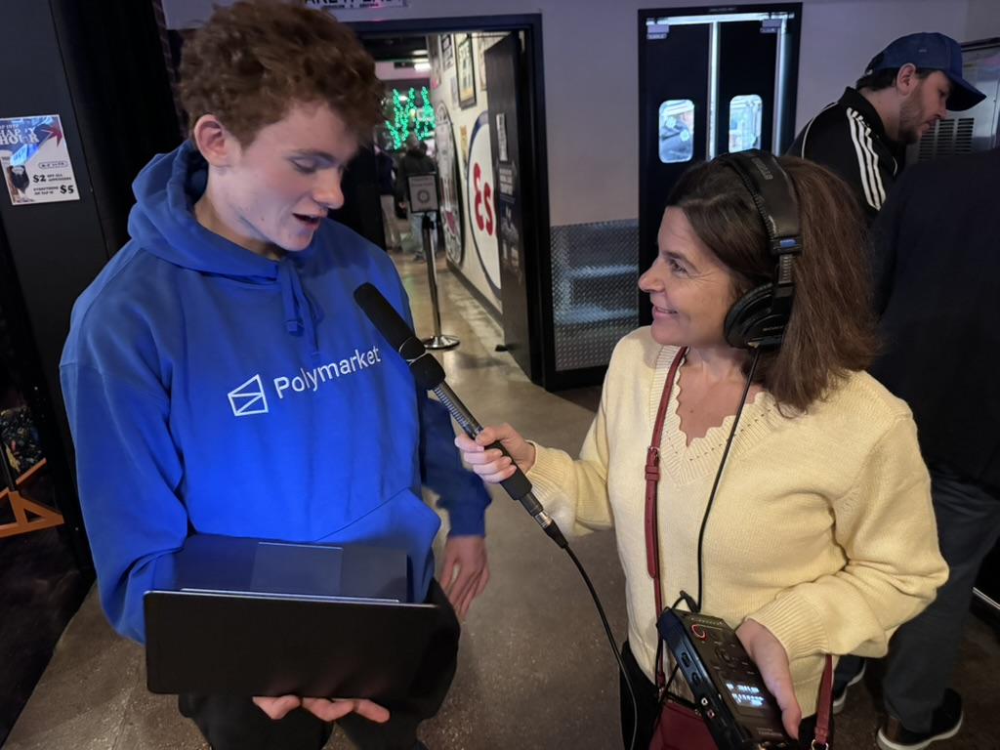

The Open Seat: ETHS Sophomore Aims to Predict Congressional Race Using Betting Market Data
The Daily Northwestern Podcast
Coverage of my VoteHub work, IL9Cast, and elections forecasting from local and state outlets.

The Daily Northwestern Podcast
Capitol Fax